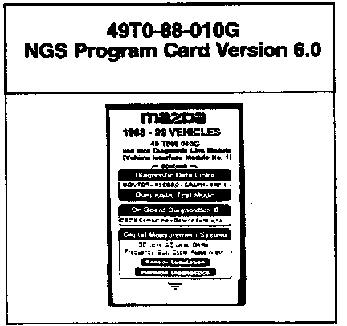

NGS System - Reprogramming Service
Bulletin No.: 005/98Issued: 08/25/98
Revised
Category
ST
Applicable Model/s
ALL
Subject:
NEW V6.0 NGS CARD (49T0-88-010G) AND REPROGRAMMING OF V4.0 (49T0-88-010E)
DESCRIPTION

Per Service Bulletin Cat. ST 001/98, issued 02/23/98, your service department currently has two reprogrammable New Generation Star (NGS) cards, an older Version 4.0 program (P/N 49T0-88-010E) and a current Version 5.0 program (49T0-88-010F). On September 11, 1998, V5.0 will supersede to V6.0 (P/N 49T0-88-010G) as a new Mazda Required Tool (MRT) to properly service MAZDA vehicles.
MNAO Technical Services Department is offering a reprogramming service which will update your older Version 4.0 to Version 6.0 at a substantial savings. Your V4.0 must be received by MNAO Technical Services Department no later than September 4, 1998. Follow the REPROGRAMMING PROCEDURE on to participate in this service.
Note:
^ Be sure to send your V4.0 card to MNAO Technical Services Department. DO NOT SEND YOUR VERSION 4.0 CARD TO AMERICA KOWA SEIKI, INC.
^ If your service department chooses not to participate, or cannot participate in this reprogramming service, a new V6.0 card will be automatically shipped to your service department.
APPLICATION
This card is used with your NGS Tester to properly service 1988-1999 Mazda Vehicles. Refer to your Workshop Manual for the application of this card and tester.
PRICING
The price for the V6.0 reprogramming exchange is $216.09 plus shipping costs. If MNAO Technical Services Department does not receive your V4.0 card, or you miss the September 4, 1998 cut-off date, the new card price is $316.57 plus shipping costs.
SHIPPING AND BILLING INFORMATION
Your NGS card with V6.0 will be shipped to you by September 11, 1998. Your parts account will be billed for the appropriate amount. DO NOT SEND PAYMENT TO AMERICA KOWA SEIKI, INC.
REPROGRAMMING PROCEDURE
Please use the following procedure to update your NGS Version 4.0 program card to Version 6.0 program card.
STEP 1:
Carefully inspect your V4.0 card for signs of damage (i.e. dents, cracks, fluid damage, etc.), since MNAO Technical Services Department will only accept cards that are reprogrammable.
STEP 2:
Package your V4.0 card in a small box with your Service Manager's business card taped to the NGS card. Send the package to the following address:
MNAO Technical Services Department
1444 McGaw Avenue
Irvine, CA. 92614
RE: Mazda NGS Card Reprogramming
Step 3:
Send your package by Federal Express 2 day or UPS Blue label prepaid. It must arrive at MNAO Technical Services Department by September 4, 1998.
NOTE:
DO NOT SEND YOUR V5.0 NGS CARD! Use this V5.0 card until your new V6.0 card arrives at your Service Department.
Please contact your District Customer Support Manager or Tools / Equipment Manager (949-442-6531) if you have any questions regarding this information.

DISCLAIMER